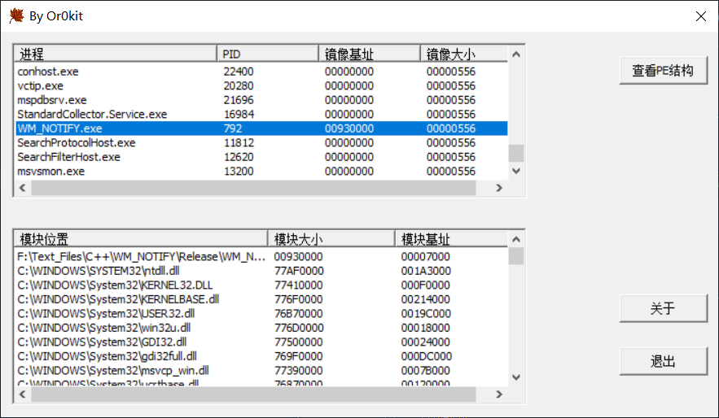

# 标准控件与通用控件
Windows 标准控件，标准控件总是可用的
Static
Group Box
Button
Check Box
Radio Button
Edit
ComboBox
ListBox
Windows 通用控件，代码包含在 Comctrl32.dll
使用前：
#include <commctrl.h>#pragma comment(lib,"comctl32.lib")
常用的通用控件有：
Animation
ComboBoxEx
Date_and_Time_Picker
Drag_List_Box
Flat_Scroll_Bar
Header
HotKey
ImageList
IPAddress
List_View
Month_Calendar
Pager
Progress_Bar
Property_Sheets
Rebar
Status Bars
SysLink
Tab
Toolbar
ToolTip
Trackbar
TreeView
Up_and_Down
特别说明：
通用控件在使用前，需要通过 INITCOMMONCONTROLSEX 进行初始化
只要在您的程序中的任意地方引用了该函数就、会使得 WINDOWS 的程序加载器 PE Loader 加载该库
INITCOMMONCONTROLSEX icex; | |
icex.dwSize = sizeof(INITCOMMONCONTROLSEX); | |
icex.dwICC = ICC_WIN95_CLASSES; | |
InitCommonControlsEx(&icex); |
# 列表视图控件（List Control）
列表视图控件是一种非常常用的控件，在需要以报表形式显示数据时，列表控件通常是最好的选择，许多专用的数据报表控件，也是在它的基础上派生而来。与树视图类似，列表控件可以由多个子项目组成，并且支持大图标、小图标、列表和报表 4 种方式显示信息（可通过视图 -> 其他窗口 -> 属性窗口 ->View 来更改）
列表视图包含一个项目列表，而其中每个项目由图标、项目名称和多个子项组成，每一个子项所包含的项目的数目必须相同，属性相同的每个子项显示在同一个列中。
列表视图控件有两个重要的数据结构 LVCOLUMN 和 LVITEM。
# LV_COLUMN 结构体
#define LV_COLUMN LVCOLUMN
LVCOLUMN 用于定义报表方式下的 “列” 的结构。
typedef struct _LVCOLUMN { | |
UINT mask; // 说明此结构中哪些成员是有效的 | |
int fmt; // 列的对齐方式 | |
int cx; // 列的初始宽度 | |
LPTSTR pszText; // 列的标题 | |
int cchTextMax; //pszText 所指向的缓冲区的大小 | |
int iSubItem; // 与列关联的子项的索引值，从 0 开始 | |
int iImage; // 与列关联的图像列表中指定图像的索引值 | |
int iOrder; // 第几列，0 代表最左一列 | |
} LVCOLUMN, FAR *LPLVCOLUMN; |
mask 类型： UINT
指定哪些成员包含有效信息的变量。该成员可以是零，也可以是以下值中的一个或多个：
| 价值 | 意义 |
|---|---|
| LVCF_FMT | 该 FMT 成员是有效的。 |
| LVCF_WIDTH | 该 CX 成员是有效的。 |
| LVCF_TEXT | 该 pszText 成员是有效的。 |
| LVCF_ORDER | 版本 4.70。该 iOrder 成员是有效的。 |
| LVCF_MINWIDTH | 版本 6.00 和 Windows Vista。 该 cxMin 成员是有效的。 |
| LVCF_DEFAULTWIDTH | 版本 6.00 和 Windows Vista。 该 cxDefault 成员是有效的。 |
| LVCF_IDEALWIDTH | 版本 6.00 和 Windows Vista。 该 cxIdeal 成员是有效的。 |
fmt
类型：int
列标题与列中子项文本的对齐方式。最左边一列的对齐方式始终是 LVCFMT_LEFT；它无法改变。此成员可以是以下值的组合。请注意，并非所有组合都有效。
| 价值 | 意义 |
|---|---|
| LVCFMT_LEFT | 文本左对齐。 |
| LVCFMT_RIGHT | 文本右对齐。 |
| LVCFMT_CENTER | 文本居中。 |
| LVCFMT_JUSTIFYMASK | 用于选择控制字段对齐的 fmt 位的位掩码。要检查列的格式，请使用逻辑 “和” 将 LCFMT_JUSTIFYMASK 与 fmt 组合在一起。然后，您可以使用 switch 语句来确定是否设置了 LVCFMT_LEFT、LVCFMT_RIGHT 或 LVCFMT_CENTER 位。 |
| LVCFMT_IMAGE | 版本 4.70。该项目显示图像列表中的图像。 |
| LVCFMT_BITMAP_ON_RIGHT | 版本 4.70。位图出现在文本的右侧。这不会影响分配给标题项的图像列表中的图像。 |
| LVCFMT_COL_HAS_IMAGES | 版本 4.70。标题项包含图像列表中的图像。 |
| LVCFMT_FIXED_WIDTH | 版本 6.00 和 Windows Vista。 无法调整列大小；与 HDF_FIXEDWIDTH 相同。 |
| LVCFMT_NO_DPI_SCALE | 版本 6.00 和 Windows Vista。 如果未设置，则 CCM_DPISCALE 将控制放大固定宽度。 |
| LVCFMT_FIXED_RATIO | 版本 6.00 和 Windows Vista。 宽度将随着行高而增加。 |
| LVCFMT_SPLITTBTON | 版本 6.00 和 Windows Vista。 Column 是一个拆分按钮（与 HDF_SPLITBUTTON 相同）。列的标题显示一个拆分按钮（与 HDF_SPLITBUTTON 相同）。 |
# LV_ITEM 结构体
#define LV_ITEM LVITEM
LVITEM 用于定义 “项” 的结构。
typedef struct _LVITEM { | |
UINT mask; // 说明 LVITEM 结构中哪些成员有效 | |
int iItem; // 项目的索引值 (可以视为行号) 从 0 开始 | |
int iSubItem; // 子项的索引值 (可以视为列号) 从 0 开始 | |
UINT state; // 子项的状态 | |
UINT stateMask; // 状态有效的屏蔽位 | |
LPTSTR pszText; // 主项或子项的名称 | |
int cchTextMax; //pszText 所指向的缓冲区大小 | |
int iImage; // 关联图像列表中指定图像的索引值 | |
LPARAM lParam; // 程序定义的 32 位参数 | |
int iIndent; // 表示图像位置缩进的单位 | |
} LVITEM, FAR *LPLVITEM; |
mask
类型：UINT
一组标志，指定此结构的哪些成员包含要设置的数据或正在请求哪些成员。该成员可以设置以下一个或多个标志：
| 价值 | 意义 |
|---|---|
| LVIF_COLFMT | Windows Vista 及更高版本。 该 piColFmt 成员有效或必须设置。如果使用此标志，则 cColumns 成员有效或必须设置。 |
| LVIF_COLUMNS | 该 cColumns 成员有效或必须设置。 |
| LVIF_DI_SETITEM | 操作系统应该存储请求的列表项信息并且不再请求它。此标志仅与 LVN_GETDISPINFO 通知代码一起使用。 |
| LVIF_GROUPID | 该 iGroupId 成员有效或必须设置。如果在发送 LVM_INSERITEM 消息时未设置此标志，则假定 iGroupId 的值是 I_GROUPIDCALLBACK。 |
| LVIF_IMAGE | 该 IIMAGE 成员有效或必须设置。 |
| LVIF_INDENT | 该 iIndent 成员有效或必须设置。 |
| LVIF_NORECOMPUTE | 如果控件收到 LVM_GETITEM 消息，它不会生成 LVN_GETDISPINFO 来检索文本信息。相反，pszText 成员将包含 LPSTR_TEXTCALLBACK。 |
| LVIF_PARAM | 该 lParam 的成员有效或必须设置。 |
| LVIF_STATE | 该状态成员有效或必须设置。 |
| LVIF_TEXT | 该 pszText 成员有效或必须设置。 |
# ListView 的使用
1、初始化列名信息
LV_COLUMN lv; | |
HWND hListProcess; | |
// 初始化 | |
memset(&lv,0,sizeof(LV_COLUMN)); | |
// 获取 IDC_LIST_PROCESS 句柄 | |
hListProcess = GetDlgItem(hDlg,IDC_LIST_PROCESS); | |
// 设置整行选中 | |
SendMessage(hListProcess,LVM_SETEXTENDEDLISTVIEWSTYLE,LVS_EX_FULLROWSELECT,LVS_EX_FULLROWSELECT); | |
// 第一列 | |
lv.mask = LVCF_TEXT | LVCF_WIDTH | LVCF_SUBITEM; | |
lv.pszText = TEXT("进程"); // 列标题 | |
lv.cx = 200; // 列宽 | |
lv.iSubItem = 0; | |
//ListView_InsertColumn(hListProcess, 0, &lv); | |
SendMessage(hListProcess,LVM_INSERTCOLUMN,0,(DWORD)&lv); | |
// 第二列 | |
lv.pszText = TEXT("PID"); | |
lv.cx = 100; | |
lv.iSubItem = 1; | |
//ListView_InsertColumn(hListProcess, 1, &lv); | |
SendMessage(hListProcess,LVM_INSERTCOLUMN,1,(DWORD)&lv); | |
// 第三列 | |
lv.pszText = TEXT("镜像基址"); | |
lv.cx = 100; | |
lv.iSubItem = 2; | |
ListView_InsertColumn(hListProcess, 2, &lv); | |
// 第四列 | |
lv.pszText = TEXT("镜像大小"); | |
lv.cx = 100; | |
lv.iSubItem = 3; | |
ListView_InsertColumn(hListProcess, 3, &lv); |
2、向列表中新增数据
LV_ITEM vitem; | |
// 初始化 | |
memset(&vitem,0,sizeof(LV_ITEM)); | |
vitem.mask = LVIF_TEXT; | |
vitem.pszText = "csrss.exe"; | |
vitem.iItem = 0; | |
vitem.iSubItem = 0; | |
//ListView_InsertItem(hListProcess, &vitem); | |
SendMessage(hListProcess, LVM_INSERTITEM,0,(DWORD)&vitem); | |
vitem.pszText = TEXT("448"); | |
vitem.iItem = 0; | |
vitem.iSubItem = 1; | |
ListView_SetItem(hListProcess, &vitem); | |
vitem.pszText = TEXT("56590000"); | |
vitem.iItem = 0; | |
vitem.iSubItem = 2; | |
ListView_SetItem(hListProcess, &vitem); | |
vitem.pszText = TEXT("000F0000"); | |
vitem.iItem = 0; | |
vitem.iSubItem = 3; | |
ListView_SetItem(hListProcess, &vitem); | |
vitem.pszText = TEXT("winlogon.exe"); | |
vitem.iItem = 1; | |
vitem.iSubItem = 0; | |
//ListView_InsertItem(hListProcess, &vitem); | |
SendMessage(hListProcess, LVM_INSERTITEM,0,(DWORD)&vitem); | |
vitem.pszText = TEXT("456"); | |
vitem.iSubItem = 1; | |
ListView_SetItem(hListProcess, &vitem); | |
vitem.pszText = TEXT("10000000"); | |
vitem.iSubItem = 2; | |
ListView_SetItem(hListProcess, &vitem); | |
vitem.pszText = TEXT("000045800"); | |
vitem.iSubItem = 3; | |
ListView_SetItem(hListProcess, &vitem); |
# WM_NOTIFY 消息类型
WM_NOTIFY 的使用
该消息类型与 WM_COMMAND 类型相似，都是由子窗口向父窗口发送的消息。
WM_NOTIFY 可以包含比 WM_COMMAND 更丰富的信息
Windows 通用组件中有很多消息，都是通过 WM_NOTIFY 来描述的.
WM_NOTIFY 消息中的参数如下：
1 wParam : 控件 ID
2 lParam : 指向一个结构
typedef struct tagNMHDR { | |
HWND hwndFrom; // 发送通知消息的控制窗口句柄 | |
UINT idFrom; // 发送通知消息的控制 ID 值 | |
UINT code; // 通知码，如 LVM_SELCHANGED | |
} NMHDR; |
这个结构体能满足一般的要求，但能描述的信息还是有限的
解决方案：对每种不同用途的通知消息都定义另一种结构来表示
typedef struct tagNMLVCACHEHINT { | |
NMHDR hdr; | |
int iFrom; | |
int iTo; | |
} NMLVCACHEHINT, *PNMLVCACHEHINT; | |
typedef struct tagLVDISPINFO { | |
NMHDR hdr; | |
LVITEM item; | |
} NMLVDISPINFO, FAR *LPNMLVDISPINFO; | |
typedef struct _NMLVFINDITEM { | |
NMHDR hdr; | |
int iStart; | |
LVFINDINFO lvfi; | |
} NMLVFINDITEM, *PNMLVFINDITEM; |
# 本节练习
- 画出 PETools 的第一个界面
代码上传到 GitHub 上了： https://github.com/Or0kit/WM_NOTIFY
- 遍历进程、遍历模块

# 小笔记
Win32 全是 C 语言现的，但是 Win32 却使用了面向对象的思想，类是如何实现的？--> 结构体
C 也能用结构体实现类，在 WM_NOTIFY 消息类型中就用结构体实现了 继承 。
# Reference
https://blog.csdn.net/theusprome/article/details/51705116
https://docs.microsoft.com/en-us/windows/win32/api/commctrl/ns-commctrl-lvcolumna
https://docs.microsoft.com/en-us/windows/win32/api/commctrl/ns-commctrl-lvitema